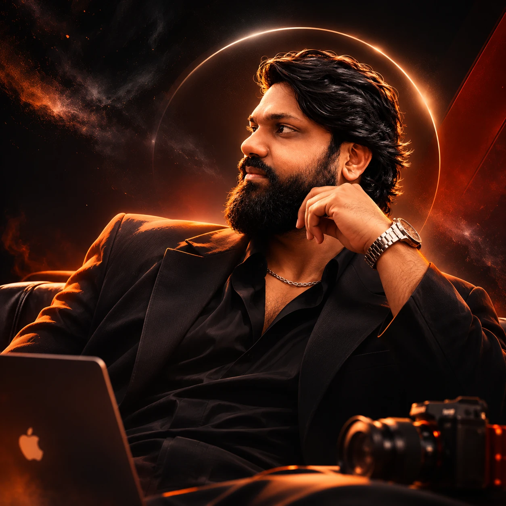

T.K. Sree Nikhil ↘
I build brands.I tell stories.I create impact.
I turn complex technology into clear stories,
thoughtful campaigns, and brand experiences
that connect with people.

STORY.
SUBSTANCE.
Creativity is
my language.
Technology is
my playground.
Strategy is
my foundation.
One connected perspective.
I’m Nikhil, a B2B technology marketer who enjoys making complicated things easy to understand—and worth paying attention to.
I work across enterprise campaigns, partner marketing, content, executive events, and brand communication at AION-TECH Solutions Limited.
My approach brings creative judgment and business context together, with AI helping me explore ideas and build more useful ways of working.
technology marketing
ENTERPRISE TECHNOLOGY ECOSYSTEMS
Think clearly.
Create boldly.
Make it matter.
Ideas out
in the world.
Enterprise stories, brought to life.
A selection of the thinking, craft,
and execution behind my work.
The right
people.
The right
conversation.
Bringing an executive audience together takes a connected journey: the message, the invitation, the follow-through, and the experience itself.
senior audience relevance
attendance conversion
Figures reported in my marketing portfolio for a CXO leadership event campaign. Attendance conversion is rounded; these are event outcomes, not revenue attribution.
Human thinking.
New possibilities.
I use AI to explore, structure, and create.
The judgment, context, and final call
remain human.
01 / INSIGHT
Start with a better question.
Collect the business context, audience needs, and source material. A useful brief starts with what we can actually support.
AIONTECH Blueprint Generator
IMPLEMENTED · INTERNALA Claude project organizing enterprise knowledge into reusable blueprints, use cases, and presales narratives.
ATS Presentation System
IMPLEMENTED · INTERNALA reusable instruction system for consistent corporate presentation redesign and brand-aligned content.
Campaign Brief Explorer
PROTOTYPEExplore a sample campaign angle by audience. A small, rule-based demonstration of structured marketing thinking.
A connected
skill set.
From the first brief to the final asset.
I connect the thinking with the doing.
01Marketing strategy +
Positioning, audience segmentation, campaign planning, partner marketing, and account-based marketing support.
B2B marketingGTM supportCampaign planning02Content & communication +
Turn enterprise topics into blogs, newsletters, social content, executive communications, and sales enablement materials.
StorytellingCopywritingThought leadership03Creative & digital +
Creative direction, visual campaign development, brand collateral, website messaging, and content design.
Brand systemsSocial creativeDigital experiences04AI & marketing operations +
Reusable prompt frameworks, AI-assisted content workflows, internal knowledge projects, and marketing process experimentation.
Generative AIPrompt designKnowledge systemsKeep learning.
Keep building.
Growing from marketing execution
into broader ownership of brand,
campaigns, and AI-enabled workflows.
Digital Marketing Specialist
Enterprise campaigns, partner communication, executive branding, content strategy, sales enablement, and internal AI initiatives.
Marketing Associate
Integrated campaigns, marketing collateral, events, market research, and customer-facing communications.
Graduate Management Trainee
Foundations in marketing research, content development, social media, and event coordination.
The work.
The recognition.
Small milestones.
Meaningful encouragement.
Above & Beyond
THRIVE recognition
Employee of the Month
AION-TECH Solutions Limited
Employee of the Quarter
Nominated
More than
a marketer.
Different interests. The same curiosity.
Finding frames, testing limits,
and taking the longer way home.
A different perspective.
Illustration · personal photo to follow
Focus. Discipline. Repeat.
Typography study · personal photo to follow
Room to explore.
Illustration · personal photo to follow
Have an idea?
Let’s make
it matter.
↗START A CONVERSATION
A good brief.
A great beginning.
Have an opportunity, a brand challenge, or a collaboration in mind? Tell me a little about it.
No sign-in needed. Just your idea.